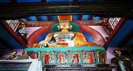

Top sights in Manali
Hadimba Temple
This much-revered wood-and-stone mandir, constructed in 1553, stands in a clearing in the cedar forest about 2km west of central Manali. Pilgrims come from across India to honour Hadimba, the demon wife of the Pandava Bhima from the Mahabharata. The temple's wooden doorway, under a three-tier pagoda-style roof, is richly carved with figures of gods, animals and dancers; antlers and ibex horns adorn the outside walls. Inside is a large sacrificial stone where grisly animal slaughterings used to take place. The Dhungri Mela festival, over several days in mid-May, sees a gathering of devtas (village deities) carried here on palanquins. Gatothkach, the warrior son of Hadimba and Bhima, is worshipped in the form of a sacred tree near the temple.
Nature Park
This woodland of magnificent towering deodars (cedars) is easily the nicest route between the centre and Old Manali, though not recommended for a woman alone. There is often no one at the gates to collect the admission fee. South of the centre is the similar Van Vihar Park.
Himalayan Nyinmapa Buddhist Temple
The Himalayan Nyinmapa Buddhist Temple contains a two-storey statue of Sakyamuni, the historical Buddha. It's visited by many tourists and a sign reminds visitors of the correct direction in which to walk round chortens (stupas): anti-clockwise.